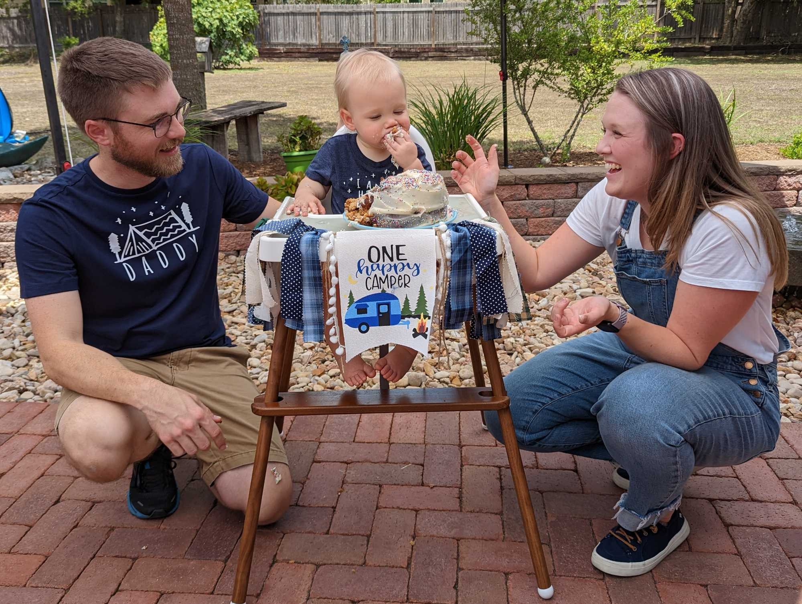

Happy New Year!
January 4th, 2023 in Hutto, Texas
In the past few months, we've travelled to Memphis for the St. Jude's Marathon, we visited family in Dallas for Christmas and we celebrated Christmas here in Hutto. Dean is learning more and more signs and words and he's having a grand old time at his daycare/school.
Thank you for reading! Stay tuned for more... -Adam, Laura & Dean

Thanksgiving in Livingston, TX
Dean's First Birthday Party, 8/20/2022
ONE Happy Camper!
August 6th, 2022 in Hutto, Texas
Nearly a year has gone by, but it hardly feels like it. Our 50-week-old is almost 1 year old! (Don't worry, we don't actually refer to his age in weeks.) We recently visited our friends at the "Cabin in the Woods" out near College Station, so here's a picture of us!
We're planning Dean's first birthday party (and by "we" I mostly mean Laura is) and we're very exited to have all our friends and family that are able to make it come celebrate with us. We were considering a "Dean's First Fiesta" taco themed party, because everyone love tacos, but ultimately deceided on a "One Happy Camper" theme.
Since it's been a minute since I've updated this page (...sorry!), here's a short update in case you hadn't heard:
We bought a new (used) Nissan Rogue in November after only having one car for a few months.
Kaldi had surgery in Feburary for her back leg then had about 6-8 weeks of recovery time and physical therapy. She had partially torn her doggy-ACL (it's not actually her ACL but it's a tendon in her knee) and she had been limping for a week before we took her to the vet for an X-ray. The bunnies took back over my parent's backyard while Kaldi was out of commission. These days, she's doing great and running around like she's a puppy still. We're just keeping a closer eye on her.
Laura and I celebrated 5 years of marriage back in Feburary.
My brother graduated college in May, after a short few years!
This summer, we've been able to visit our friends and family in Dallas, hang out with our friends in College Station and spend lots of time with Dean learning to walk and play around our new apartment we moved into in June.
The year has gone by so fast! Too fast! We see our favorite pictures of baby Dean on our Chromecast go by as if they were taken just yesterday.
Thank you for reading! Stay tuned for more... -Adam, Laura & Dean

"Cabin in the Woods" + Friends

Dean, March 27th
Dean Christopher Starbuck
September 3rd, 2021 in Pflugerville, Texas
Woah! I would have never guessed we would have a baby two days after my last little post.
Dean Christopher Starbuck was born on August 21st at 10:11pm after about 10 hours of labor and only arriving at the hospital at 8:30pm. The doctors and nurses at St. David's were amazing as well as our midwife who joined us.
Since he was born 5 weeks early, the doctors wanted to watch his lungs for a bit, and they eventually transferred him to the NICU from the newborn nursery. He would then spend 12 nights in the NICU with the amazing nurses and our awesome doctors who took care of him. We finally brought Dean home on Thursday September 2nd after staying the night with him once more in the NICU.
Laura and I spent two nights in the hospital after she gave birth, and spent the next 10 days driving back and forth from the NICU twice a day and planning for Dean to come home. It's safe to say we drove ~950 miles in the past two weeks. In the NICU, we would change his diaper, feed him, and just hold him for as long as we could without falling asleep.
We're so proud of Dean for all the hard work he's done in the NICU. He's already grown so much during his stay there. But we're overwhelmed with joy that he's finally home!
So many family members and friends have reached out letting us know that they're thinking about us, and we cannot thank you enough. Huge thank you to Luke & Shelby for taking care of our Kaldi-bear for the past two weeks.
Thank you for reading! Stay tuned for more... -Adam, Laura & Dean
Just Another Small Update
August 19th, 2021 in Pflugerville, Texas
Hey everyone, we're so excited to meet baby Starbuck. Laura is 34 weeks now, and ready to get that baby out of there!
Students are officially returning to the Upper School where Adam works. He's had a busy summer getting everything ready for teachers and students to return. We had a baby shower at Oma's just south of Dallas and brought home so many amazing gifts from our family. (Oma is German for grandmother, we were at Sharla's house.) Adam also helped install can lights in his parent's kitchen during his week off.
Laura has been working a lot more than we expected from her part-time agreement. More like 20 hours per week versus around 5. She's been learning how Kindbody does things differently than other clinics.
Next up, we'll be preparing the nursery with diapers and we're awaiting a rocking chair to be delivered.
After the baby arrives, we'll both take at least 6 weeks off of work. When Laura decides she's ready, she'll be working Saturday mornings while Adam works a regular Monday thru Friday and later Laura could pick up more time as she is able to.
Look to the right to see another "bump update". This one is around 33 weeks.
Thank you for reading! Stay tuned for more... -Adam & Laura

Life Update
June 18, 2021 in Pflugerville, Texas
We're 26 weeks today! Its crazy how fast this pregnancy seems to be flying by. To quote Ferris Bueller "Life moves pretty fast. If you don't stop and look around once in a while, you could miss it." That seems to be pretty true right now!
We're about 2 pounds this week and the size of an acorn squash. Baby loves to move around a lot just after Laura has eaten. We can even see little kicks from the outside now! Funnily enough, we've been asking Baby what their name is, waiting for a response. Baby will be in the middle of an intense boxing session, and the second we ask "Is your name ___", Baby decides they've had enough activity. So I guess we'll continue waiting until we meet him/her! Also, we built our crib yesterday actually and its adorable! Thank you, Oma Sharla!
Adam's work is in "summer mode" so that means all the students are out for the summer and he's working on a lot of projects before they get back in the fall. It also means he has modified work hours, so we get to spend more time together. This has been a huge blessing before Baby gets here.
Laura started her new job this week! She is working part-time for Kindbody as their clinical lab scientist. This means she will be working most Saturdays. Although its all virtual right now, the clinic will be opening soon and Laura can't wait to get back in the lab.
Look to the right to see a "bump update". Baby will be here before we know it!
Thank you for reading! Stay tuned for more... -Adam & Laura

Howdy, Y'all
April 30, 2021 in Pflugerville, Texas
We made it! Luke and Shelby helped us move nearly 3 weeks ago now. Them helping us out has been so amazing. We're now residing with Adam's parents, or more like keeping watch over their house while they travel.
Kaldi has been absolutely loving having a big backyard to chase bunnies in. But she's also been very muddy with all the weather we've had the past 2 weeks which has been fun.
This week, we're 19 weeks pregnant. Nearly halfway done already! Well, with the pregnancy anyways. Laura can feel the baby moving around, but it only weighs half a pound, so Adam has only felt it kick once so far. What an incredible experience.
The more keen of you have probably noticed Laura deleted her Facebook profile, so sorry! Less updates for you Facebook folk.
Thank you for reading! Stay tuned for more... -Adam & Laura

Huge Update!
March 17, 2021 in Cary, North Carolina
Hello, world. We're pregnant! We are so happy. And we're excited to finally share the news with everyone!
North Carolina has been a short adventure for us. We moved here in August, 2020 with the help of Luke and Shelby. We moved from Loveland, Colorado, after Laura finished her graduate degree and secured a job here in Raleigh. But our plans to stay here for a few years have changed, and we're moving back to central Texas to be close to our family again.
We are so thankful that Luke and Shelby have yet again agreed to help us move, and we're just waiting for them to ask for our help next time they move. By that point, Laura won't be lifting anything heavy!
Adam begins his job at St. Andrew's Episcopal School in the middle of April as the Systems Administrator (he'll be working in IT helping fix computers and servers!). Laura is currently in the middle of three job offers, so she will be able to continue working in her medical field in Austin.
Thank you for reading! Stay tuned for more... -Adam & Laura